Instrument Lighting Control Panel
| 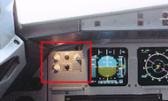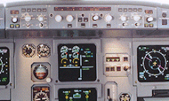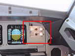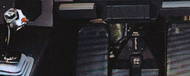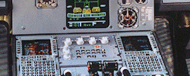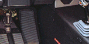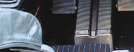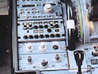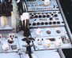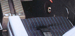 |
PFD and ND Lighting Control Panel
PFD LT CONTROL KNOB - The PFD lighting knob controls the intensity of the primary flight display lighting.
ND LT CONTROL KNOB - The ND lighting knob controls the intensity of the navigation display lighting.
CONSOLE FLOOR LT CONTROL SWITCH - The console floor lighting switch controls the flood lighting intensity of the floor around the pilot seats, side consoles, and flight bag storage area.
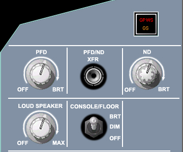